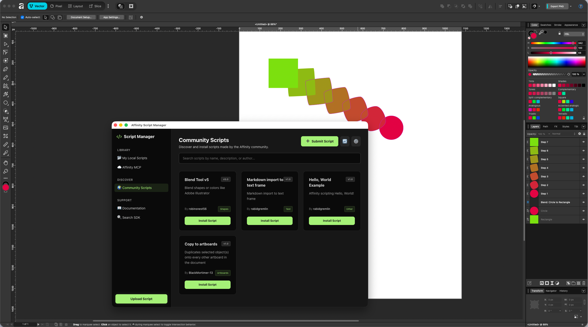

A native desktop GUI to organize your local scripts, push them instantly to the Affinity MCP server, and discover new tools from the community.

Discover tools built by other Affinity users or share your own creations. It's like a built-in App Store for your Affinity scripts.
Browse the registry, find a script you like, and hit install. The app downloads it and automatically pushes it to your Affinity server instantly.
Got a script to share? You don't need to know Git. Just paste your code into our submission form directly from the app, and we'll add it to the directory.
No more terminal commands or messy file folders.
Store and organize your custom scripts safely on your disk. Export, delete, or edit them directly from the UI.
Push your local scripts directly to your active Affinity MCP Server with a single button. No manual copying needed.
Fetch Affinity SDK documentation straight from the server and search through hints without leaving the app.